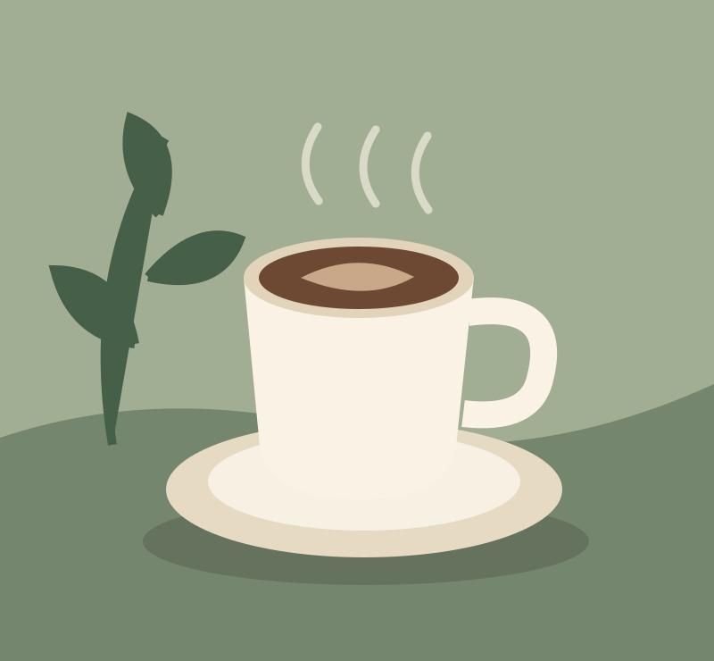

A MOMENT FOR YOURSELF
在熟悉的香氣裡，找到自己的生活節奏。

WELCOME TO GREEN PLACE
綠地咖啡相信，一杯好咖啡不只是片刻的提神，也能成為生活裡溫柔的停頓。
從咖啡的香氣到自在的空間，我們希望陪你在忙碌之間，找到一段屬於自己的時間。
THE LITTLE THINGS WE VALUE
從風味到相處的時間，細細感受生活的美好。
細心挑選咖啡豆，探索每一種風味的個性與層次。
透過烘焙展現咖啡的香氣，讓每一口都值得慢慢品味。
為日常留一個舒服的角落，獨處或相聚都能自在停留。
TAKE YOUR TIME